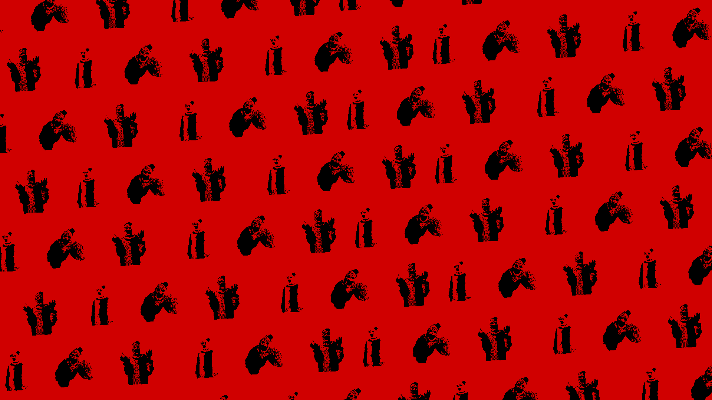
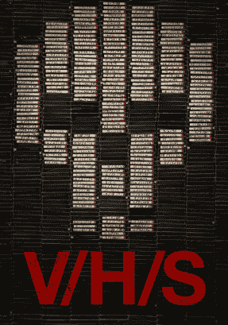
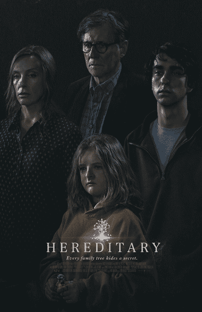
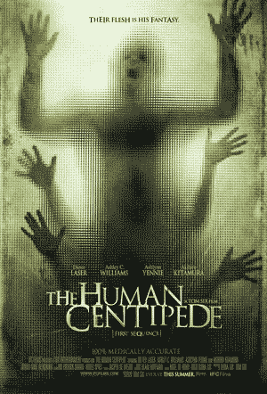
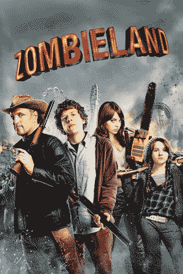

The essence of human attraction to horror
Introduction
What is it that makes humans so interested in horror?
Movies are a form of entertainment, yet the subject of horror is not always meant to be entertaining and is often meant to show the worst things that can happen to a person.
Followed and brutily killed by a masked maniac, tortured in a cage by a sadistic doctor or haunted by ghosts of the past owner's of the house you live in, how is it we find these kinds of things entertaining and why do we feel the need to watch it?
Psychological studies say that people tend to watch these kinds of movies to prepare themselves for worst case scenarios, no matter how unrealistic they might seem. What would be the best place to hide and survive during a zombie apocalypse and how do I make sure my loved ones are safe?
Or how do I escape from being trapped in a room filled with deadly puzzles like in the movie Saw.
Now ofcourse this could be a reason why people watch horror, but there must be more to this right?
Different types of horror
For starters I categorized the genre within 3 subgenres, Jumpscare, Psychological and Body. From everything I have seen most horror movies can be categorized within these 3 subgenres as these are the main ways directors try to scare the viewer.
Jumpscare horror
Is often used by big Hollywood productions and has been one of the most widely used form of scare tactics within the genre. The slow build up with the outcome of a scary image and a loud noise easily tricks peoples brains to be scared, this is known as the "Startle Response" and it is something that has kept humans safe throughout our existense. It allerts us of possible danger. Thinks of movies like: IT, the Conjuring, V/H/S.

Psychological horror
With this form of horror it is often less about the Visuals and more about clever storytelling. The story twists and turns and tries to fool the viewer in believing what is going to happen next. You see the demeaner change of the people within the movies and seeing them become more afraid as they seem to not be able to cope with the situations their put in anymore. It is more difficult to make the viewer feel scared and vulnerable, yet when it is done right it can prove to be far more effective than a jumpscare. Think of movies like: Martyrs (2008), the Lighthouse, Hereditary.

Body horror
These types of movies are meant to be more about physical suffering. How much will a person be able to take before succumbing to their wounds? It is meant to gross out the viewer and fulfill the wanting the know-how of what a certain extreme injury might look like. Think of movies like: Terrifier, Saw, the Human Centipede.

Allthough these subgenres make use of different tactics to scare it's viewer, they all have one thing in common. Whenever you are watching horror your body produces adrenaline. This stems from our fight or flight instinct. When we see something we find frightening or threatening our brain tends to go into a mode of high alert to assess the situation. Because we know that what we are watching is not real we tend to feel this sudden rush of adrenaline as pleasant.
Firsthand experience
When speaking on the subject with my sister, one of the subjects we discussed is how age has something to do with what we find enjoyable within the genre. Throughout your life certain fears you had in your childhood start to fade away as you deem them as irrational and other forms of fear come into play. I remember vividly when I was around 8 years of age I had watched the first 10 minutes of "Zombieland" which is a horror/comedy filled with zombies (as the name implies). I was ofcourse scared to death and remained afraid of this movie and zombies in general for up until I was around 12 years old as that became the moment I started viewing those fears as irrational and unrealistic.

As a teen I started "watching" horror as I was curious as of to why I was never allowed to watch these as a kid. Movies such as Evil Dead (2013), Friday the 13th (2009) and Final Destination were among the first few that I watched and I enjoyed them, but I never truly found them scary. As I was talking with my sister about this she also mentioned that she started rewatching the same horror movies she watched as a young teen, this is when she came to the realisation as of to why she never truly understood these movies. She wasn't paying attention to the story at all, and I realised that I had the exact same thing, I never truly paid attention.
When looking at recent years of going to the cinema I always worried about being in a room with the 16 year old teens who are just old enough to go to their first horror movies, as I always percieve them as loud, obnoxious, always on their phone and not paying attention to the movie whatsoever. But maybe that is because they are not neccessarily there for the movie itself, they are just there for the fact that it is labeled as Horror and is therefore an achievement to boast about to your friends at school. You more often see them at the bigger hollywood productions who fill their trailers with half of the jumpscares within the movie, but most of them would never think of going to a movie like the Lighthouse. It is not heavily marketed, it's filmed in black and grey and does not play as much with physical scary imagery but rather psychological.
Now that my sister and I are older we would much rather watch a psychological horror, as the twists and turns within the stories are far more interesting for us than a jumpscare. It tricks you into believing what is going to happen but every so often completely shatters that to keep you on your toes.
Then ofcourse the question still remains, why do people enjoy horror? I believe there is not a simple explanation for the entirety of the genre but just as I categorized the types of scare tactics used it is also important to explain the reasons why people enjoy their preferred subgenre. Not everyone who watches horror will enjoy a movie like Terrifier as it might be too graphic for them in violence and has little substance story wise. Same as not everyone will enjoy The Lighthouse as it is a more unconventional way of displaying horror and is more subtle than what people might be looking for in a movie.
A difference in time
A good thing to look into is also why the old slasher movies from the 70's and 80's are seen in such high regard compared to their newer remakes is the certain charm that they have. These older movies tend to have a lot of comedy mixed in them (whether intentional or not) which makes them more of a horror comedy nowadays. Original stories mixed with impressive practical effects and hilarious outdated scenes keep the fond memory of these older movies alive, something which their newer remake counterparts lack. Use of CGI rather than special effects, the same story retold again and again, the lack of (un)intentional comedy mixed in between the killing scenes make these movies less enjoyable. When making a movie it is important to think of every single aspect of it, if something does not work your entire production can feel flat and uninspiring.
Bigger studios are more afraid to take chances with their productions which is why we are getting remake after remaker after remake, or the same old movie just put in a newer setting but with the same old story we have seen a hundred times. This is something smaller studios such as A24 take a lot more liberty with. They are focused less on profit and more on telling original stories in more unconventional ways. Midsommar is a good example of this. The setting is not dark and grimey, but rather colourful and filled with joy. You have to pay attention to find the scary part rather than having to take it at face value. This as well is something that attracts people to cinema in general, original well thought out stories.
Conclusion
In conclusion, there just is not one specific reason as to why people enjoy horror. Whether you watch it for the story, the gore or because you want to boast about it to your friends, it all comes down to personal preference. Some people will never watch a horror movie as they simply do not find it enjoyable or because they have dreams about it at night and can't sleep because of it. Or you might watch a slasher such as Terrifier 3 to fulfill your need to see physical violence knowing that whatever you are watching is not a snuff film or footage of a real life serial killer. The only thing that gives somewhat of an explanation as to why some people enjoy it is because of the release of adrenaline, endorphines and dopamine whilst knowing what you're watching is not real.
Sources:
https://hbr.org/2021/10/the-psychology-behind-why-we-love-or-hate-horror
https://carey.jhu.edu/articles/research/why-we-enjoy-horror-science-explains#:~:text=Exposure%20to%20terrifying%20acts%20like,such%20as%20excitement%20or%20joy.
https://www.verywellmind.com/why-do-people-like-horror-movies-5224447
https://online.csp.edu/resources/article/pyschology-of-fear/#:~:text=The%20enjoyment%20that%20some%20people,of%20an%20adrenaline%2Dseeking%20personality.
https://www.psichi.org/blogpost/987366/479889/Why-Do-People-Like-Horror-Movies-What-Is-the-Psychology-Behind-It
https://online.csp.edu/resources/article/pyschology-of-fear/#:~:text=Biological%20Reactions%20to%20Fear&text=Horror%20entertainment%20can%20trigger%20the,is%20not%20a%20genuine%20threat.
https://girishduttshukla.com/blog/psychological-thrillers-and-why-are-they-so-intriguing/
https://en.wikipedia.org/wiki/Martyrs_(2008_film)
https://www.eyeforfilm.co.uk/feature/2009-03-26-interview-with-pascal-laugier-about-martyrs-feature-story-by-lee-griffiths
https://en.wikipedia.org/wiki/The_Lighthouse_(2019_film)
https://www.derby.ac.uk/magazine/issue-11/why-are-we-so-obsessed-with-true-crime/
https://www.sciencefocus.com/the-human-body/why-are-we-so-obsessed-with-true-crime
https://www.unc.edu/posts/2024/01/11/why-are-we-fascinated-by-true-crime/
Regarding the pain of others, Susan Sontag, 2003
Interview with Lidwien Birza, student Media and Culture, University of Amsterdam, 2024
Written by Feyo Birza, 2024